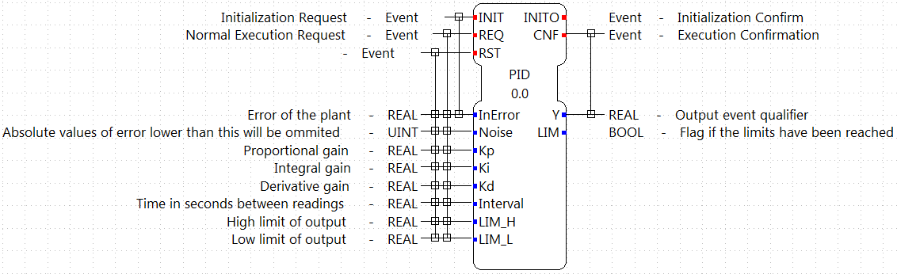
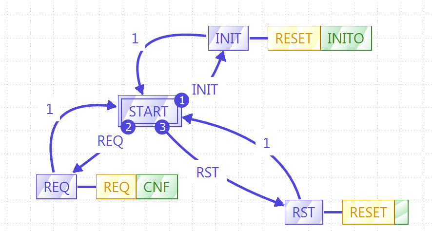
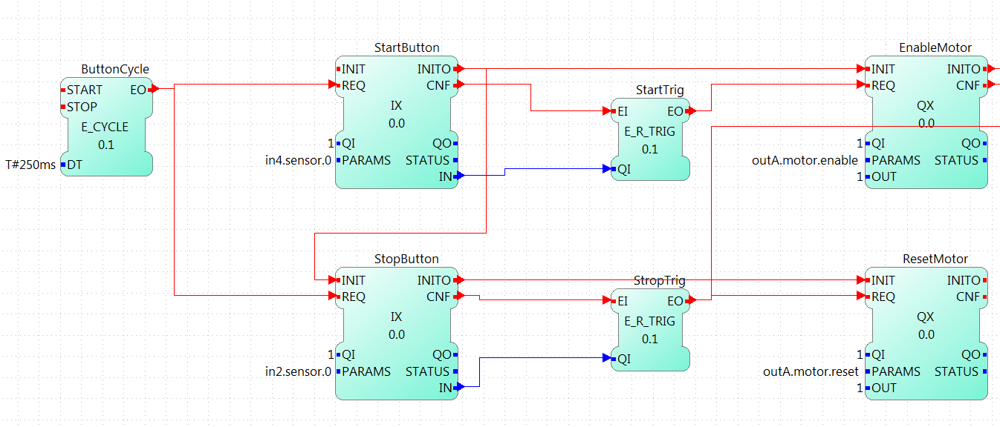
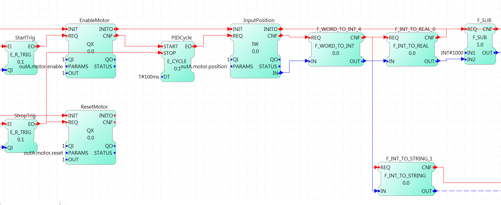
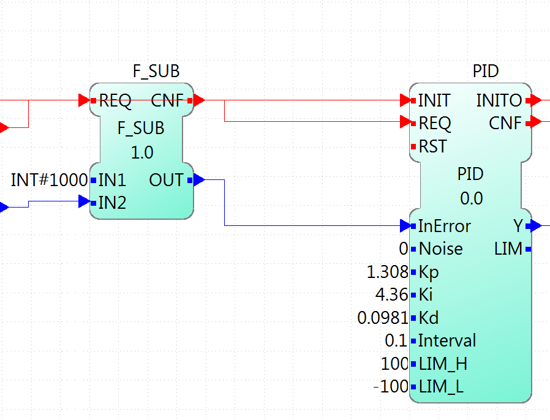
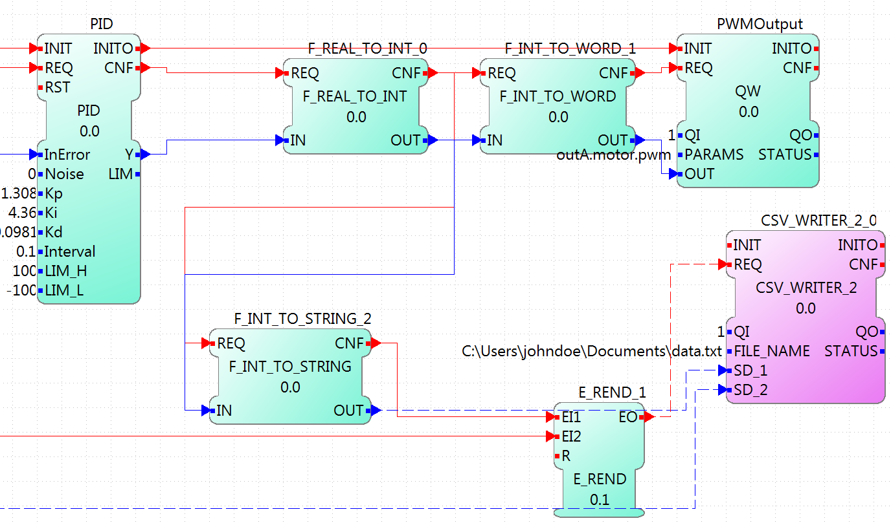
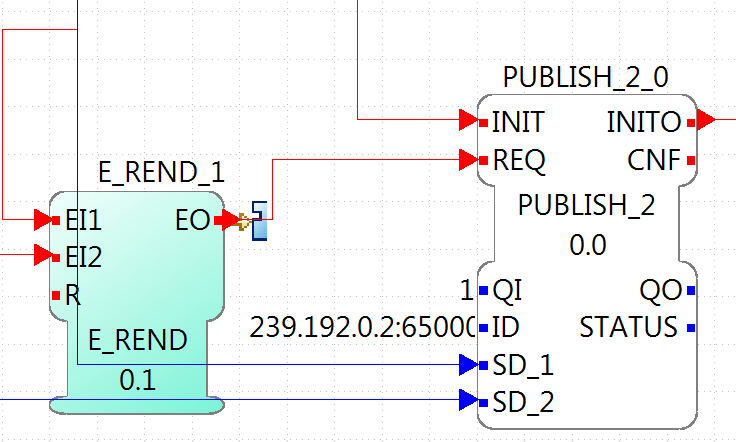
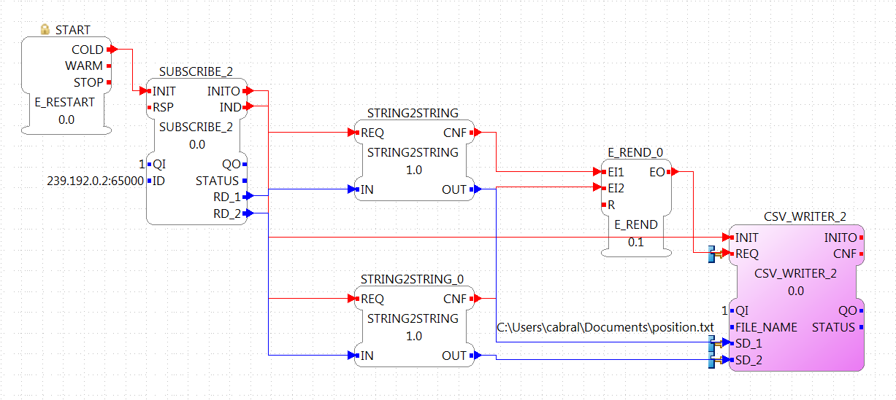
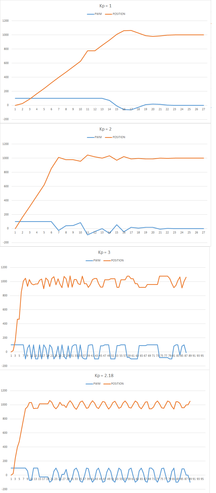
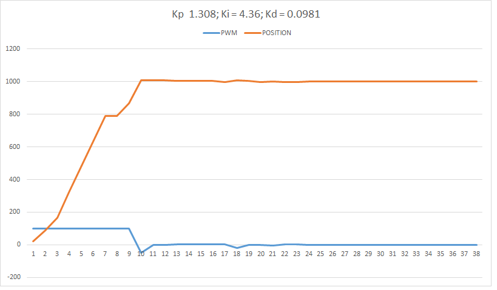

In this tutorial, an implementation of a PID controller for an EV3 motor is presented. The position of the motor will be controlled using PWM. The implementation shows all the steps from creating a PID Functional Block in 4diac IDE, up to tuning the PID controller and printing the values in a graph.
A basic usage knowledge of Eclipse 4diac is necessary to follow through the steps.
The first thing to do is to create the PID Function Block. Go to File → New → New type. In the pop-up menu, choose the parent folder to store the new FB, choose PID as the Type name, and select Basic as Type. Click Finish, and the view to edit the new FB opens. First, the interface must be configured. Use the image below to complete it:
The interface uses Kp, Ki and Kd as constants to be tuned instead of the times Ti and Td. This allow to easily zero the integral part. The interval is the time between requests to the FB and is expected to be constant.
With the interface set, the next step is to define the ECC and the algorithm. The ECC graph is really simple, and it should look like the image below. You may have to create the new algorithms with the names shown before filling the graph.
With the ECC graph ready, it is time to write the code that will rule the behavior of the FB. In the Properties tab below the ECC graph, in one of the sides-tabs called "All InternalVars" add two variables of type REAL, called LAST_ERROR and INTEGRATION_ACCUM. These variables are part of the FB and retain their values between events.
Next, we will edit the algorithms specified in the ECC graph. The simple RESET algorithm just initialize the internal variables. The code for RESET is as following:
LAST_ERROR := 0.0;
INTEGRATION_ACCUM := 0.0;
The REQ algorithm is the following, but since is more complex, it will be explained in parts.
VAR
proportionalPart: REAL;
integralPart: REAL;
derivativePart: REAL;
Ydesired: REAL;
errorFiltered: REAL;
END_VAR;
IF ABS(InError) <= Noise THEN
errorFiltered := 0;
ELSE
errorFiltered := InError;
END_IF;
(* calculate proportional part *)
proportionalPart := Kp * errorFiltered;
(* run integrator *)
integralPart := errorFiltered * Interval * Ki + INTEGRATION_ACCUM;
(* run derivative*)
derivativePart := (errorFiltered - LAST_ERROR) * Kd / Interval;
LAST_ERROR := errorFiltered;
(* calculate output Y *)
Ydesired := proportionalPart + integralPart + derivativePart;
(* check output for limits *)
IF Ydesired >= LIM_H THEN
Y := LIM_H;
IF Ki <> 0.0 THEN
IF (errorFiltered < 0 AND Kp > 0) OR (errorFiltered > 0 AND Kp < 0) THEN
INTEGRATION_ACCUM := integralPart;
END_IF;
ELSE
INTEGRATION_ACCUM := 0.0;
END_IF;
LIM := TRUE;
ELSIF Ydesired <= LIM_L THEN
Y := LIM_L;
IF Ki <> 0.0 THEN
IF (errorFiltered > 0 AND Kp > 0) OR (errorFiltered < 0 AND Kp < 0)THEN
INTEGRATION_ACCUM := integralPart;
END_IF;
ELSE
INTEGRATION_ACCUM := 0.0;
END_IF;
LIM := TRUE;
ELSE
Y := Ydesired;
INTEGRATION_ACCUM := integralPart;
LIM := FALSE;
END_IF;
The part between VAR and END_VAR is the declaration of the local variables that will be used inside this algorithm. The values are not retained between events.
The first IF-statement
IF ABS(InError) <= Noise THEN
errorFiltered := 0;
ELSE
errorFiltered := InError;
END_IF;turns off the PID when the value of the error is below the Noise specified in the input. Only when the error is bigger than the Noise threshold, the computation of the PID will be done.
The next part is the core of the PID computation. All the values are stored in local variables before mirroring them to the actual outputs and internal variables.
(* calculate proportional part *)
proportionalPart := Kp * errorFiltered;
(* run integrator *)
integralPart := errorFiltered * Interval * Ki + INTEGRATION_ACCUM;
(* run derivative*)
derivativePart := (errorFiltered - LAST_ERROR) * Kd / Interval;
LAST_ERROR := errorFiltered;
(* calculate output Y *)
Ydesired := proportionalPart + integralPart + derivativePart;The last part is really important, because it limits the output and eliminates the integral windup. Because the motor PWM can have values between -100 and 100, if the output is outside this range, the PID should limit this value. More information about integration windup can be found in the internet, but basically, when the error is too big, the integration part doesn't work as supposed to and inserts unexpected behavior to the controller.
(* check output for limits *)
IF Ydesired >= LIM_H THEN
Y := LIM_H;
IF Ki <> 0.0 THEN
IF (errorFiltered < 0 AND Kp > 0) OR (errorFiltered > 0 AND Kp < 0) THEN
INTEGRATION_ACCUM := integralPart;
END_IF;
ELSE
INTEGRATION_ACCUM := 0.0;
END_IF;
LIM := TRUE;
ELSIF Ydesired <= LIM_L THEN
Y := LIM_L;
IF Ki <> 0.0 THEN
IF (errorFiltered > 0 AND Kp > 0) OR (errorFiltered < 0 AND Kp < 0)THEN
INTEGRATION_ACCUM := integralPart;
END_IF;
ELSE
INTEGRATION_ACCUM := 0.0;
END_IF;
LIM := TRUE;
ELSE
Y := Ydesired;
INTEGRATION_ACCUM := integralPart;
LIM := FALSE;
END_IF; The IF and ELSEIF are the limits of the value, and in the ELSE allowed values are processed. The output limitation is straightforward, but the windup solution can be confusing. What is done is to activate the integration part only when the desired output is inside the limits (in the ELSE), OR when it is outside the limits AND the error is forcing the way back inside the limits. Information about anti-windup can for example be found here.
With the algorithms done, the FB is ready to be exported and compiled with 4diac FORTE.
Once the FB is ready, go to File → Export... and select 4diac IDE → 4diac IDE Type Export. Then explore the folder tree on the left and select the PID FB created on the right. Choose where to export and then click Finish.
To get the source code ready for compiling your FORTE with the created FB, the generated .cpp and .h files have to be added to the CMake configuration. The easiest way to do that is to put both files into the folder src/modules/lms_ev3 and add a file CMakeLists.txt in that folder, with the following line at the end:
The next thing to do is to compile FORTE for the EV3. The easiest way to do it is to copy all the code to the EV3, get the compiling tools inside the EV3 and compile it. The process is really slow compared if it is done in a normal computer, but for compiling once it is much faster than setting all the cross-compiling environment explained here. More details are presented in the section above.
After FORTE with the PID runs in the EV3, is time to create the application that will run on it to control the motor position, and store the values. The application will be shown in parts, for a better understanding.
The first part of the application can be made in different ways, which allows a better control of the tests. In this example, it consists of two push buttons connected to in2 and in4, one for starting the motor and PID, and the other one to reset all parameters (which also stops the motor). It has a cycle to read both buttons waiting for a rising trigger on them which sends the event to the enable or reset of the motor.
The initialization of the StartButton FB is done from the COLD START FB when configuring the system.
This part begins with a cycle block that outputs an event every 100ms, that will trigger the PID computation. The cycle starts when the motor is enabled, and stops when the motor is reset. The cycle triggers the reading of the system, in this case the position of the motor. This position is read as WORD (it should be a double, actually, but for now, it can be limited to a WORD) and is then converted to an INT that allows negative values (the WORD_TO_INT block was updated to allow negative values), and then to REAL in order to compute the difference to the set point established by the user (INT#1000 in the example). The F_SUB block expects REAL values, and in the input IN1, the set point is given. Take a look that at the output of the WORD_TO_INT block, there is another conversion to a STRING, this conversion is sent to the PC to store the values of the position to plot it. In the last part, it will be shown how is it done.
This part takes the error as the difference of the set point and the position read from the motor, and sends it to the PID controller. The rest of the inputs of it are user defined. The gains (Kp, Ki, and Kd) are tuned according to the method. In this example, the Zeigler-Nichols was used, and it will be seen later. The interval is 0.1 that corresponds to the 100ms of the PID Cycle. The limits corresponds to the limit values of the output, in this case the PWM of the motor.
The last part corresponds to the output of the PID controller and the sending of the information the a log in a PC. The output of the PID is converted to INT and then to WORD to write then the output to the PWM of the motor. Also, the INT value is converted to STRING, similar to the position in the input part, and once both conversions (position and output) are done, they are written to a file using the CSV_WRITER_2 FB from the UTILS module. This FB allows to write 2 values (SD_1 and SD_2) as CSV. The block is in other color, because is in another device, not in the EV3.
Now that the application is done, some other configurations are needed in the system. The first thing is to create both devices and connect them using the Ethernet segment. In the EV3 resource, first connect the COLD START to the initialization of the StartButton as mentioned before.
The other configuration in the EV3 resource is the publishing of the conversions of the position and output of the PID. Using a PUBLISH_2_0 with both input and the multicast UDP ID (in this case, 239.192.0.2:65000), and the REQ triggerred by the E_REND FB from the application. With this, the EV3 will send the position and output of the PID to the ID address everytime both conversion are done.
The configuration of the resource of the PC where the data will be stored, consists of a SUBSCRIBE_2 FB that will receive the information published by the EV3. The ID is the same as the publisher, and the outputs are converted using the STRING2STRING because the output is an ANY type. When both conversion are done, they are written in the file. Take in account that the CSV_WRITER FB doesn't flush inmediately the output, so the FORTE application must exit to read the information in the file.
NOTE: In Windows machines, the used Multicast address is not always detected and the packets from the EV3 don't arrive to the FORTE application in the PC. This happens often if the PC is connected to the EV3 through an ad-hoc connection. To overcome this, try adding the address route with gateway to your own machine in the as presented in the Troubleshooting part at the bottom of the Traffic Control with BBB example
With the application ready and working, the Ziegler-Nichols method is presented for tuning the PID. The basic idea is to turn off the integral and derivative parts, and increase Kp until the output has stable and constant oscillations. The value of Kp that produces this output is called Ku and the oscillation period at this Ku is called Tu. With these two values, the values of the Kp, Ki, and Kd are chosen according to the table of the link before. Remember that Kd = Kp/Ti and Ki = Kp*Td.
The set point is the position 1000. The first value of Kp is 1 and produces a non oscillating result. With Kp = 2, it takes longer, but still without stable oscillations. With Kp = 3, the results show a stable oscillation. So, the critical Ku value must be between 2 and 3. After a binary search between 2 and 3, it is found that Ku = 2.18 and its graph is shown also below. From the data, it can be seen that the oscillations have a period of 600ms (0.6s).
With the values of Ku and Tu, the values of Kp, Ki and Kd for the PID controller are computed from the table. The values are Kp = 1.308, Ki = 4.36 and Kd = 0.0981. With these values, the PID controller is again tested and the result is as follows:
Go back to Examples index:
If you want to go back to the Start Here page, we leave you here a fast access